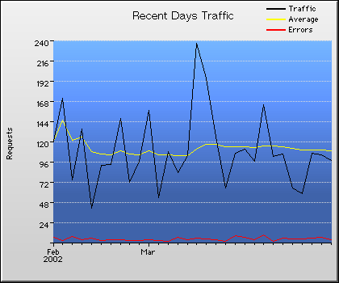

|  |  |
 | |
(30) Recent Days Transmission Statistics |
||||||
|---|---|---|---|---|---|---|
| Requests | % | Bytes | % | Pages | Errors | Date |
| 121 | 0.3% | 1.8M | 0.2% | 117 | 7 | Tuesday Feb 19 2002 |
| 172 | 0.4% | 3.4M | 0.5% | 170 | 3 | Wednesday Feb 20 2002 |
| 75 | 0.2% | 1.7M | 0.2% | 75 | 8 | Thursday Feb 21 2002 |
| 136 | 0.3% | 2.6M | 0.4% | 135 | 4 | Friday Feb 22 2002 |
| 42 | 0.1% | 1.0M | 0.1% | 41 | 6 | Saturday Feb 23 2002 |
| 93 | 0.2% | 1.8M | 0.2% | 92 | 3 | Sunday Feb 24 2002 |
| 94 | 0.2% | 2.5M | 0.3% | 92 | 4 | Monday Feb 25 2002 |
| 148 | 0.4% | 2.7M | 0.4% | 147 | 4 | Tuesday Feb 26 2002 |
| 72 | 0.2% | 1.6M | 0.2% | 70 | 3 | Wednesday Feb 27 2002 |
| 97 | 0.2% | 2.4M | 0.3% | 96 | 3 | Thursday Feb 28 2002 |
| 158 | 0.4% | 3.0M | 0.4% | 157 | 4 | Friday Mar 01 2002 |
| 54 | 0.1% | 1.2M | 0.2% | 53 | 3 | Saturday Mar 02 2002 |
| 109 | 0.3% | 1.7M | 0.2% | 106 | 2 | Sunday Mar 03 2002 |
| 84 | 0.2% | 1.9M | 0.3% | 82 | 7 | Monday Mar 04 2002 |
| 104 | 0.2% | 2.4M | 0.3% | 103 | 4 | Tuesday Mar 05 2002 |
| 238 | 0.6% | 3.7M | 0.5% | 237 | 6 | Wednesday Mar 06 2002 |
| 196 | 0.5% | 3.7M | 0.5% | 191 | 5 | Thursday Mar 07 2002 |
| 126 | 0.3% | 2.7M | 0.4% | 122 | 4 | Friday Mar 08 2002 |
| 66 | 0.2% | 1.3M | 0.2% | 63 | 2 | Saturday Mar 09 2002 |
| 107 | 0.3% | 2.0M | 0.3% | 105 | 9 | Sunday Mar 10 2002 |
| 112 | 0.3% | 1.9M | 0.3% | 109 | 7 | Monday Mar 11 2002 |
| 97 | 0.2% | 1.5M | 0.2% | 97 | 4 | Tuesday Mar 12 2002 |
| 165 | 0.4% | 3.5M | 0.5% | 161 | 10 | Wednesday Mar 13 2002 |
| 103 | 0.2% | 2.2M | 0.3% | 101 | 2 | Thursday Mar 14 2002 |
| 106 | 0.3% | 1.7M | 0.2% | 106 | 6 | Friday Mar 15 2002 |
| 66 | 0.2% | 1.1M | 0.1% | 66 | 5 | Saturday Mar 16 2002 |
| 59 | 0.1% | 1.3M | 0.2% | 59 | 5 | Sunday Mar 17 2002 |
| 107 | 0.3% | 2.6M | 0.4% | 106 | 6 | Monday Mar 18 2002 |
| 105 | 0.3% | 2.4M | 0.3% | 104 | 7 | Tuesday Mar 19 2002 |
| 98 | 0.2% | 2.8M | 0.4% | 98 | 4 | Wednesday Mar 20 2002 |
| 38,403 | 92.1% | 667.4M | 91.0% | 37,738 | 1,309 | Others |
| 72 | 0.2% | 1.3M | 0.2% | 70 | 2 | Average |
| 41,713 | 100.0% | 733.6M | 100.0% | 40,999 | 1,456 | Totals |
Copyright © Active Concepts, 1997-99